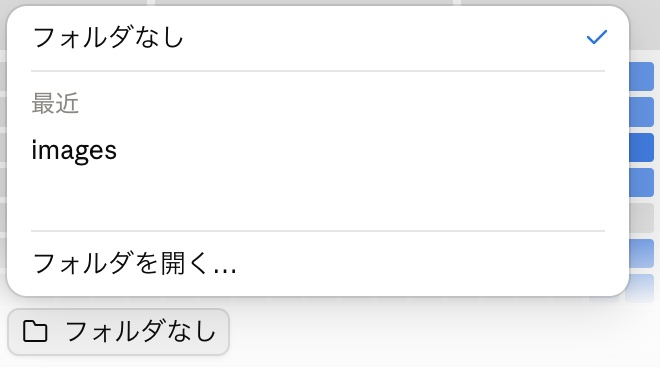
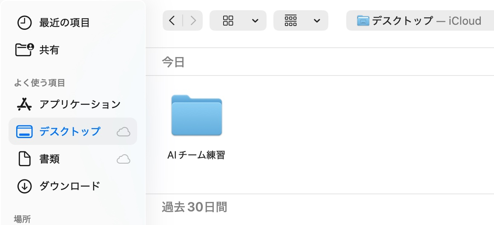

コピペで使えるプロンプト付き
Claudeで
「AIチーム」を作る
はじめてガイド
1人の助手から、3人のチームへ。
リサーチ → 分析 → 台本を、順番に任せます。
まず知っておいてほしいこと
-
有料プラン
チームを作る機能（Claude Code）は、Pro以上の有料プランで使えます。無料版では使えません。
-
デスクトップ版
Claudeのデスクトップアプリの「Code」で作ります。パソコン内のフォルダを使うためです。
-
安全のために
練習用のフォルダで試します。チームは投稿や送信をしません（読むことと、保存だけ）。
5ステップの
全体像
やることは、コピーして貼ることと、確認することだけです
- 1練習用のフォルダを作る失敗しても困らない場所で試します
- 2Claudeのデスクトップアプリで「Code」を開き、フォルダを選ぶ左上の「</>」のボタンです。入力欄の上の「フォルダなし」から、作ったフォルダを選びます
- 3「チームを作る文章」を貼るClaudeが、3人分の設定ファイルを作ってくれます
- 4「/reel-team」でチームに頼むテーマと、参考にするリールの話を渡します
- 5できた台本を確認して、手直しする投稿するかどうかは、自分で決めます
AIチームって
何？
1人のAIに、全部を一度に頼むと、どこが良くてどこが弱いのか、分かりにくくなります。そこで、役割を分けた3人に、順番に頼みます。前の人の結果を、次の人が受け取る流れです。
-
1 リサーチ担当
やること：参考リールの話を読んで、冒頭のひとこと・話す順番・最後の誘導を書き出す
やらないこと：感想や推測を足すこと
-
2 分析担当
やること：なぜ見られそうかを3つ、理由つきで分析する
やらないこと：数字を推測で書くこと
-
3 台本担当
やること：あなたのテーマで台本を書く。書いたあとに、参考リールとの言葉の重なりを自分で見直す
やらないこと：参考リールの言い回しを、そのまま使うこと
使うのは「型」だけ
参考にするのは、話す順番や引きつけ方といった「型」です。言葉や中身のまねはしません。ほかの人の作品を、そのまま写すことは避けましょう。
STEP 1・2
準備
有料プランデスクトップ版
- 練習用のフォルダを作る：デスクトップなどに、「AIチーム練習」という名前の空のフォルダを作ります。大事なファイルは入れません。
- デスクトップアプリを開く：まだの人は、claude.com/download から入れて、ログインします。
- 「Code」を開く：画面の左上にある「</>」のボタンです。
- 作業するフォルダを選ぶ：入力欄のすぐ上に、「ローカル」と「フォルダなし」と書かれたボタンがあります。「フォルダなし」を押して、メニューの「フォルダを開く…」を選びます。
- 「AIチーム練習」を選ぶ：パソコンの画面が開くので、デスクトップの「AIチーム練習」を選んで、決定します。選べると、「フォルダなし」の表示が、「AIチーム練習」というフォルダの名前に変わります。Claudeは、選んだフォルダの中だけを扱います。


画面の名前は変わることがあります
ボタンの名前や場所は、アプリの更新で変わることがあります。見つからないときは、公式の始め方（英語）で確認してください。ブラウザの翻訳機能で日本語にして読めます。
STEP 3
チームを作る
下の文章をコピーして、「Code」の入力欄に貼って送ります。〈 〉の部分は、自分の内容に書き換えてください。
送る前に、確認
入力欄の上のボタンが「フォルダなし」のままのときは、まだフォルダが選ばれていません。準備の手順4・5で、「AIチーム練習」を選んでから送ってください。文章の最初にある「このフォルダ」は、選んだフォルダのことです。
プロンプト① AIチームを作る
このフォルダに、Instagramリール台本づくりのAIチームを作ってください。 【チームの3人】 それぞれ専用のサブエージェントとして .claude/agents に作ります。 1. リサーチ担当（reel-research）：私が渡す参考リールの文字起こしを読み、「冒頭のひとこと」「話す順番」「最後の誘導」を、事実だけ書き出す。書かれていないことは足さない。 2. 分析担当（reel-analysis）：リサーチ結果を読み、なぜ見られそうかを3つ、理由つきで分析する。 3. 台本担当（reel-script）：分析と、私が渡す「作りたいテーマ」をもとに、私のアカウント向けの台本を書く。話の中身と具体例は、作りたいテーマのものにする。参考リールからは「型」（話す順番や引きつけ方）だけを使い、言い回しは使わない。 アカウントの条件（ジャンル・読む人・口調）は、各担当のファイルには書かず、CLAUDE.md だけに書いて、そこを読んで使う。 【呼び出し用のコマンド】 .claude/skills/reel-team/SKILL.md を作り、/reel-team と入力したら、3人が「リサーチ→分析→台本」の順に、1人ずつ動くようにします。 入力は、「作りたいテーマ」と「参考リールの文字起こし」の2つです。例：/reel-team テーマ：〇〇（改行して）文字起こしの全文 結果は outputs フォルダに、01_research.md、02_analysis.md、03_script.md として保存します。 【私のこと】（CLAUDE.md に書く） ・発信ジャンル：〈例：在宅ワーク×AI〉 ・見てほしい人：〈例：40代の働くママ〉 ・口調：〈例：やわらかい話し言葉〉 【守ること】 ・台本担当は、書いたあとに自分で見直し、参考リールと8文字以上同じ並びの言葉が入っていたら、書き直す ・投稿や送信、外部サービスへの接続はしない（読むことと、outputsへの保存だけ） ・作るファイルは、ここに書いた5つだけにする。プログラム（.py など）は足さない。見直しも、プログラムは使わず、台本担当が自分の目で行う ・パソコンへの命令（コマンドの実行）は使わない。outputs フォルダは、保存するときに自動でできるので、別に作らなくてよい ・作り終えたら、作ったファイルの一覧を教えてください
〈 〉は、自分のアカウントの内容に書き換えてから送ってください。
送ったあとに起きること
- Claudeが、次の5つのファイルを作ります（すべて、ふつうの文章のファイルです）。
- 「.claude」という場所に書いてよいか、確認が出ることがあります。何を書くのか読んで、よければ「許可」を押します。
- 作り終えたら、新しい会話を開きます（作ったチームを確実に読み込むためです）。
CLAUDE.mdあなたのアカウントのこと（ジャンル・読む人・口調）。台本担当が読みます.claude/agents/reel-research.mdリサーチ担当の説明書.claude/agents/reel-analysis.md分析担当の説明書.claude/agents/reel-script.md台本担当の説明書.claude/skills/reel-team/SKILL.md「/reel-team」と入力したときの、動かす順番
中身は、読んで確認できます
ここで作るのは、動かすプログラムではなく、文章のファイル5つです。気になるときは、Claudeに「作ったファイルを、やさしい言葉で説明してください」と頼めば、読み解いてくれます。担当は、ファイルを読むことと、outputsフォルダへの保存だけを行い、投稿や送信、外部への接続はしません。
もし、これ以外のファイル（.pyなど）が作られていたときは、いったん手を止めて、「これは何のファイルですか？」とClaudeに聞いてください。AIの判断で、ファイルが増えることがあるためです。
STEP 4
チームに頼む
新しい会話で、入力欄に「/」を打つと、「reel-team」が候補に出ます。下の形で、テーマと参考リールの話を渡します。
プロンプト② チームに台本づくりを頼む
/reel-team テーマ：〈例：AIでメールの返信文を10分で作る方法〉 〈ここに、参考にするリールの文字起こしを貼る。文字起こしが無いときは、話の流れを自分でメモしたものでもOK〉
参考リールの話は、どう用意する？
- 気になったリールを見て、話の流れを自分でメモする（いちばん簡単で、安全です）
- 自分で用意した、文字起こしを貼る
自動で集めるのは、おすすめしません
Instagramは、許可のない自動のデータ収集を、利用規約で禁止しています。参考にするリールは、あなたが選んで渡してください。
待ち時間：数十秒から数分普通のチャットより、利用枠を多く使います
AIに任せられる仕事を、
もっと増やしたい人へ
チームで動かす感覚が、つかめてきたのではないでしょうか。
AIを仕事につなげる方法や、初心者さん向けの活用術を『AIマネタイズの教科書』にまとめています。無料で受け取れます。
受け取りは任意です。このまま下に進んでも、最後まで読めます。
実際に動かした例
テスト用の架空のリール（晩ごはんの献立の話）を参考に、別のテーマで頼んだ結果です
頼んだこと
テーマ：AIでメールの返信文を10分で作る方法
1人目：リサーチ担当の結果（一部）
冒頭のひとこと
「毎日の晩ごはん、何にするか決めるだけで疲れていませんか。」
話す順番
1. 晩ごはんの悩みを投げかける
2. 話し手の体験を伝える
3. やり方が3つだと示す
（…全部で9項目）
最後の誘導
保存を促して、プロフィールのリンクへ案内している
2人目：分析担当の結果（一部）
- 冒頭が、毎日の小さな疲れを言い当てている
- 「3つだけ」と数を先に言い、中身も軽い
- 結果が先に見え、保存とリンクへの誘導が自然につながる
※再生数などの数字は渡していないため、「実際の反応の裏づけはありません」と書き添えてありました。
3人目：台本担当の結果
冒頭のひとこと
メールの返信、書き出しで手が止まってしまうこと、ありませんか。
本編
わたしはAIを使い始めてから、返信文に悩む時間がぐっと短くなりました。
ポイントは3つに絞りました。
まず、届いたメールをそのまま貼り付けます。
次に、返信でいちばん伝えたいことを、短く書いて渡します。
最後に、丁寧めか、やわらかめか、雰囲気を決めて伝えます。
これだけで、そのまま送れそうな返信文が、10分もかからずにできあがります。
最後の誘導
あとで見返せるように、保存しておいてくださいね。
そのまま使える頼み方の例は、プロフィールから見られます。
台本担当の「見直し」
台本担当は、書いたあとに、参考リールと同じ言い回しがないかを自分で見直しました。このときは、初稿の3か所が参考リールと一致していたので、自分で書き直してから出してくれました。
毎回、同じ結果にはなりません
これは、1回動かしたときの結果です。台本は、あくまで「たたき台」です。自分の体験に合わせて、言い回しを直してから使ってください。効果や反応は、お約束できません。
STEP 5
手直しのしかた
「もっとやさしくして」だけだと、全体が書き換わってしまいます。どこを、何が気になって、どうしたいかを伝えましょう。台本は、outputs フォルダの 03_script.md に保存されています。
プロンプト③ 台本を直してもらう
outputs/03_script.md の台本の〈例：本編の3つ目〉が、〈例：少し難しい言い方〉になっています。〈例：もっとやさしい言葉〉に直してください。 ほかの部分は変えないでください。
〈 〉は、自分の内容に書き換えてから送ってください。
直したあとのチェック
直したあとの台本は、参考リールとの言葉の重なりを、もう一度確認していません。台本の最後にある「見直し結果」の欄も、そのままです。大きく直したときは、もう一度、見直してもらいましょう。
安全に使うコツ
次の6つだけ守ってください。チェックは、このブラウザに保存されます。
チェック済み 0 / 6
もっと広げる
同じ作り方で、役割を入れ替えれば、別のチームも作れます。たとえば、次のような分け方です。
- note記事：調べる → 構成を考える → 書く
- Webページ：設計する → デザインする → 作る → 確かめる
- データの分析：数字を読む → 気になる点を探す → まとめる
この「3人のリール台本チーム」で動かした流れを、まず1回、体験してみてください。
困ったとき
「フォルダなし」と表示されたままです。
入力欄の上の「フォルダなし」を押して、メニューの「フォルダを開く…」を選び、「AIチーム練習」を選んでください。フォルダを選んでから、文章を送ります。
「/」を打っても、reel-teamが出ません。
作り終えたあとに、新しい会話を開いてから、もう一度「/」を打ってみてください。それでも出ないときは、作業するフォルダが「AIチーム練習」になっているか確認してください。
無料版でもできますか？
できません。チームを作る機能（Claude Code）は、Pro以上の有料プランが対象です。料金は料金ページで確認してください。
許可の画面が出て、不安です。
わからないまま許可する必要はありません。「何をするための許可ですか？変更する場所と、元に戻せるかを、日本語で説明してください」と聞いて、納得してから許可してください。
参考リールの文字起こしがありません。
リールを見ながら、話の流れを、自分の言葉でメモすれば大丈夫です。「冒頭のひとこと」「話す順番」「最後の誘導」が分かる程度で足ります。
台本が、毎回違います。
AIの答えは、毎回少しずつ変わります。気に入った台本は、保存しておきましょう。直したい所は、「手直しのしかた」の文章で伝えると、近づきます。
確認した内容
2026年10月7日
- このガイドの文章（プロンプト①②）で、3人のチームを作り、実際に動かして、台本ができることを確認しました。
- 確認は、Claude Codeで行いました。デスクトップアプリでの許可の画面は、お使いの設定で表示が違うことがあります。
- 3人は、順番に動き、ファイルを読むことと、outputsへの保存だけを行います（投稿や送信、外部への接続はしません）。
機能や料金は変わることがあります
Claudeは頻繁に更新されます。画面の表示や対象プランが、このガイドと違う場合は、公式の最新情報を優先してください。このガイドは、効果や成果をお約束するものではありません。
40代からでも、
働き方は変えられる。
AIをチームで動かせるようになると、時間に少し余裕が生まれます。私も40代からAIを使って、いろいろな仕事に挑戦しています。
「AIを使って家で働きたい」
「今より収入の柱を増やしたい」
そんな方に向けて、AI初心者さんでもAIを仕事に活かす考え方や方法をまとめた
『AIマネタイズの教科書』
も無料でご用意しています。
また、「何から始めたらいいのかわからない」「自分には何が向いているのか相談したい」
という方に向けて、AI収益化サポート会も実施中です。
個別でのご相談も、下のLINEから受け付けています。
一緒に新しいことに挑戦していきましょう！
 AIを仕事につなげる方法を見てみる
AIを仕事につなげる方法を見てみる
LINEで無料で受け取れます